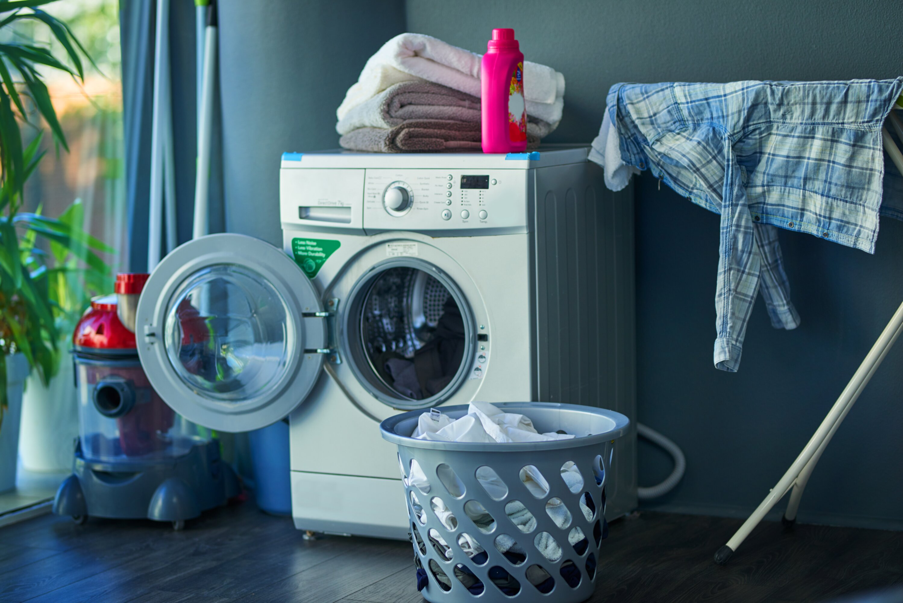
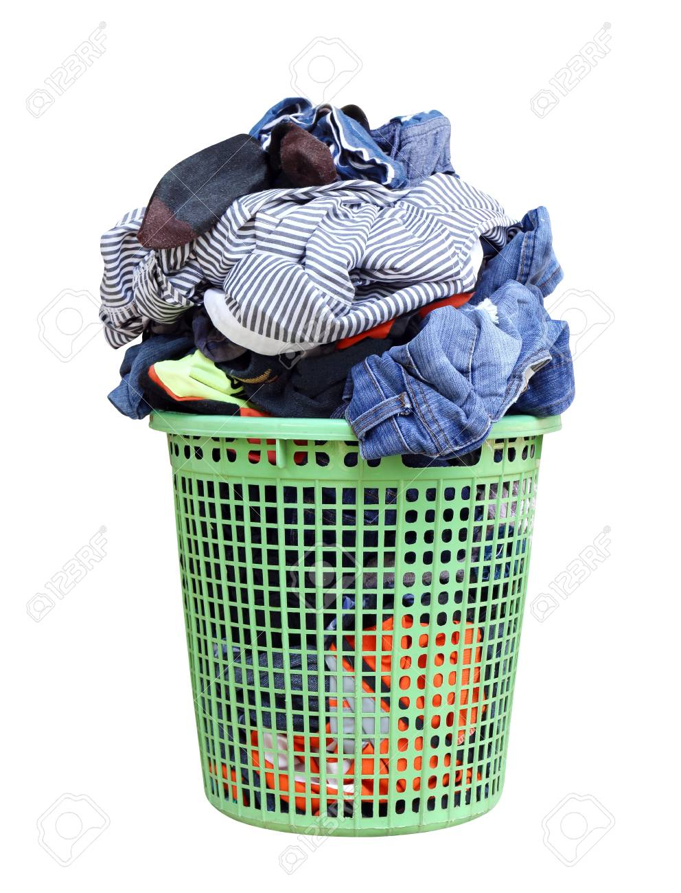
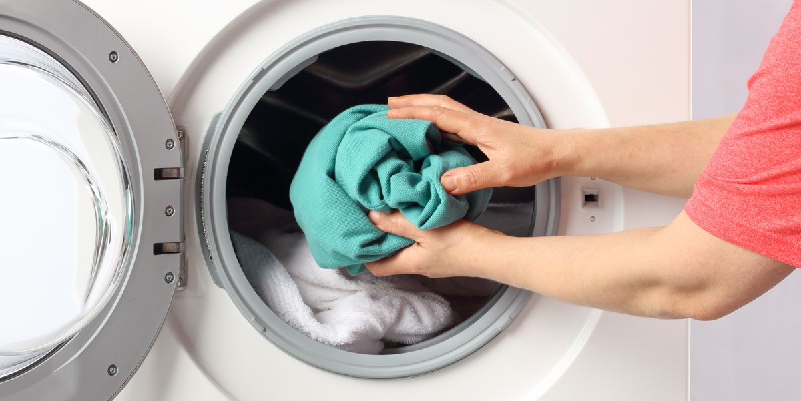
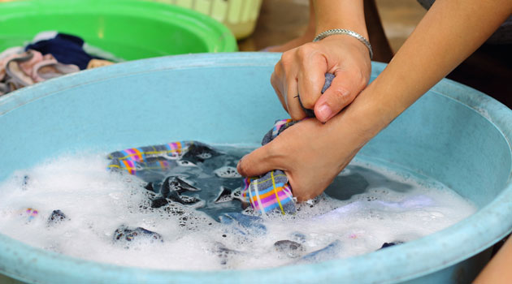
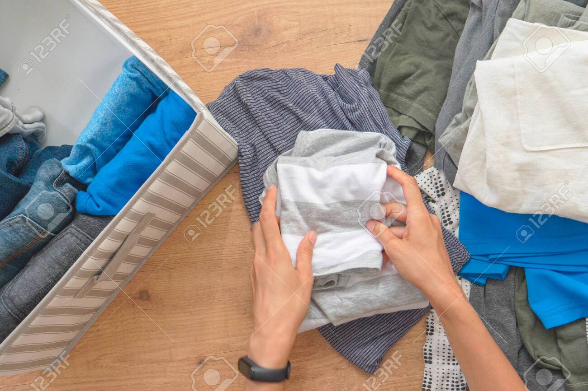

KỸ NĂNG GIẶT QUẦN ÁO
Làm thế nào để dạy trẻ cách sử dụng máy giặt? Nếu muốn trẻ em trở thành người có trách nhiệm, chúng ta cần để chúng học hỏi và hướng dẫn sử dụng cho chúng những thứ trong khả năng của mình. 1. Bắt đầu hướng dẫn khi trẻ còn nhỏ Trẻ em ở giai đoạn 5 tuổi sẽ là lúc bạn cho trẻ xem cách mình sử dụng máy giặt, đồng thời giải thích cho chúng biết tại sao bạn phải làm như vậy, con của bạn sẽ từng bước học hỏi. Đối với trẻ được 7-8 tuổi, trong vòng 1 đến 2 tháng hướng dẫn, chúng đã có thể tự mình thực hành việc giặt giũ với ít hoặc không cần đến sự giám sát, trẻ em sẽ cảm thấy vui mừng vì mình đã trở nên “người lớn” hơn, có trách nhiệm hơn. 2.Lựa chọn nơi giặt quần áo thân thiện cho trẻ Sắp xếp khu vực giặt quần áo hợp lý với đầy đủ tiện nghi cần thiết như xà phòng, nước xả ở nơi mà trẻ em dễ tiếp cận và sử dụng. Tuy nhiên, bạn vẫn cần giám sát kỹ để đảm bảo an toàn cho con của mình.  3.Dạy trẻ em cách phân loại quần áo bẩn Giúp con của bạn phân loại đồ giặt riêng ra như: quần áo màu trắng, sáng màu, màu tối, drap giường,… Đồng thời giải thích cho chúng việc phân loại như vậy sẽ giúp cho quần áo trắng khi giặt sẽ không bị lẫn màu, tùy từng loại vải sẽ sử dụng tính năng giặt, nhiệt độ nước khác nhau, có những đồ giặt cần sử dụng các sản phẩm hỗ trợ riêng ngoài xà phòng…  4. Hướng dẫn cho trẻ em sử dụng máy giặt Hầu hết máy giặt trong gia đình chỉ sử dụng một vài tính năng nhất định. Vì vậy, bạn nên hướng dẫn cho trẻ tính năng giặt thông thường bạn hay sử dụng nhất kể cả máy giặt lồng đứng và máy giặt lồng ngang, cho trẻ tự tay bấm các nút giặt, điều đó sẽ khiến cho chúng cảm thấy thích thú với việc giặt giũ hơn.  5. Hướng dẫn cho trẻ em cách sử dụng máy sấy Có thể bạn không tin nhưng việc bạn chỉ cho con đâu là bộ lọc xơ vải và cách để kiểm tra, làm sạch nó trước khi thêm đồ ướt vào để sấy sẽ làm cho trẻ cảm thấy yêu thích công việc này. Tiếp đến, bạn sẽ dạy con cách lấy quần áo ra khỏi máy giặt, làm cho quần áo hết xoắn và sử dụng máy sấy. 6. Dạy cho trẻ cách giặt đồ bằng tay Chỉ cho trẻ các bước giặt bằng tay như sau:  Đổ bao nhiêu nước vào chậu giặt là đủ.Làm cách nào để thêm chất tẩy rửa.Làm sao để tẩy sạch vết bẩn.Cuối cùng, phần khó khăn nhất là cách để vắt nước từ quần áo bằng tay. 7. Dạy trẻ cách phơi quần áo đúng Sử dụng giá phơi đồ sẽ phù hợp vì trẻ em không đủ cao để với tới dây phơi. Chỉ cho chúng cách định hình quần áo trên giá phơi để không khí có thể tác động lên tất cả mọi nơi của quần áo, giúp quần áo nhanh chóng được khô ráo. 8. Hướng dẫn trẻ gấp quần áo sau khi phơi khô Chỉ cho con gấp áo sơ mi, áo len và quần gọn gàng. Đối với váy, áo khoác, đồ tây nên sử dụng móc treo và sau cùng là cách gấp khăn, ra trải giường.  Trên đây là cách dạy con bạn giặt quần áo.